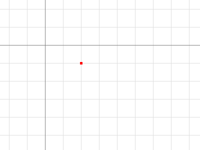
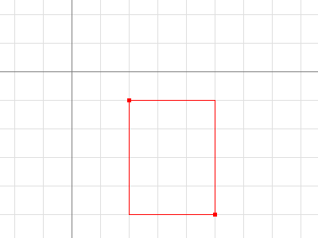
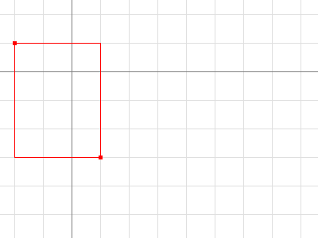
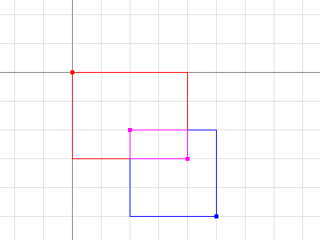

The image and
image/color packages define a number of types:
color.Color and color.Model describe colors,
image.Point and image.Rectangle describe basic 2-D
geometry, and image.Image brings the two concepts together to
represent a rectangular grid of colors. A
separate article covers image
composition with the image/draw package.
Colors and Color Models
Color is an interface that defines the minimal method set of any type that can be considered a color: one that can be converted to red, green, blue and alpha values. The conversion may be lossy, such as converting from CMYK or YCbCr color spaces.
{{code "/src/pkg/image/color/color.go" `/type Color interface/` `/^}/`}}
There are three important subtleties about the return values. First, the red,
green and blue are alpha-premultiplied: a fully saturated red that is also 25%
transparent is represented by RGBA returning a 75% r. Second, the channels have
a 16-bit effective range: 100% red is represented by RGBA returning an r of
65535, not 255, so that converting from CMYK or YCbCr is not as lossy. Third,
the type returned is uint32, even though the maximum value is 65535, to
guarantee that multiplying two values together won't overflow. Such
multiplications occur when blending two colors according to an alpha mask from a
third color, in the style of
Porter and Duff's
classic algebra:
dstr, dstg, dstb, dsta := dst.RGBA() srcr, srcg, srcb, srca := src.RGBA() _, _, _, m := mask.RGBA() const M = 1<<16 - 1 // The resultant red value is a blend of dstr and srcr, and ranges in [0, M]. // The calculation for green, blue and alpha is similar. dstr = (dstr*(M-m) + srcr*m) / M
The last line of that code snippet would have been more complicated if we worked
with non-alpha-premultiplied colors, which is why Color uses
alpha-premultiplied values.
The image/color package also defines a number of concrete types that implement
the Color interface. For example,
RGBA is a struct that represents
the classic "8 bits per channel" color.
Note that the R field of an RGBA is an 8-bit
alpha-premultiplied color in the range [0, 255]. RGBA satisfies the
Color interface by multiplying that value by 0x101 to generate a
16-bit alpha-premultiplied color in the range [0, 65535]. Similarly, the
NRGBA struct type represents
an 8-bit non-alpha-premultiplied color, as used by the PNG image format. When
manipulating an NRGBA's fields directly, the values are
non-alpha-premultiplied, but when calling the RGBA method, the
return values are alpha-premultiplied.
A Model is simply
something that can convert Colors to other Colors, possibly lossily. For
example, the GrayModel can convert any Color to a
desaturated Gray. A
Palette can convert any Color to one from a
limited palette.
Points and Rectangles
A Point is an (x, y) co-ordinate
on the integer grid, with axes increasing right and down. It is neither a pixel
nor a grid square. A Point has no intrinsic width, height or
color, but the visualizations below use a small colored square.

{{code "/doc/progs/image_package1.go" `/p := image.Point/`}}
A Rectangle is an axis-aligned
rectangle on the integer grid, defined by its top-left and bottom-right
Point. A Rectangle also has no intrinsic color, but
the visualizations below outline rectangles with a thin colored line, and call
out their Min and Max Points.
For convenience, image.Rect(x0, y0, x1, y1) is equivalent to
image.Rectangle{image.Point{x0, y0}, image.Point{x1, y1}}, but is
much easier to type.
A Rectangle is inclusive at the top-left and exclusive at the
bottom-right. For a Point p and a Rectangle r,
p.In(r) if and only if
r.Min.X <= p.X && p.X < r.Max.X, and similarly for Y. This is analogous to how
a slice s[i0:i1] is inclusive at the low end and exclusive at the
high end. (Unlike arrays and slices, a Rectangle often has a
non-zero origin.)

{{code "/doc/progs/image_package2.go" `/r := image.Rect/` `/fmt.Println/`}}
Adding a Point to a Rectangle translates the
Rectangle. Points and Rectangles are not restricted to be in the
bottom-right quadrant.

{{code "/doc/progs/image_package3.go" `/r := image.Rect/` `/fmt.Println/`}}Intersecting two Rectangles yields another Rectangle, which may be empty.

{{code "/doc/progs/image_package4.go" `/r := image.Rect/` `/fmt.Printf/`}}
Points and Rectangles are passed and returned by value. A function that takes a
Rectangle argument will be as efficient as a function that takes
two Point arguments, or four int arguments.
Images
An Image maps every grid square in a
Rectangle to a Color from a Model.
"The pixel at (x, y)" refers to the color of the grid square defined by the
points (x, y), (x+1, y), (x+1, y+1) and (x, y+1).
A common mistake is assuming that an Image's bounds start at (0,
0). For example, an animated GIF contains a sequence of Images, and each
Image after the first typically only holds pixel data for the area
that changed, and that area doesn't necessarily start at (0, 0). The correct
way to iterate over an Image m's pixels looks like:
b := m.Bounds()
for y := b.Min.Y; y < b.Max.Y; y++ {
for x := b.Min.X; x < b.Max.X; x++ {
doStuffWith(m.At(x, y))
}
}
Image implementations do not have to be based on an in-memory
slice of pixel data. For example, a
Uniform is an
Image of enormous bounds and uniform color, whose in-memory
representation is simply that color.
Typically, though, programs will want an image based on a slice. Struct types
like RGBA and
Gray (which other packages refer
to as image.RGBA and image.Gray) hold slices of pixel
data and implement the Image interface.
These types also provide a Set(x, y int, c color.Color) method
that allows modifying the image one pixel at a time.
If you're reading or writing a lot of pixel data, it can be more efficient, but
more complicated, to access these struct type's Pix field directly.
The slice-based Image implementations also provide a
SubImage method, which returns an Image backed by the
same array. Modifying the pixels of a sub-image will affect the pixels of the
original image, analogous to how modifying the contents of a sub-slice
s[i0:i1] will affect the contents of the original slice
s.
For low-level code that works on an image's Pix field, be aware
that ranging over Pix can affect pixels outside an image's bounds.
In the example above, the pixels covered by m1.Pix are shaded in
blue. Higher-level code, such as the At and Set
methods or the image/draw package, will clip
their operations to the image's bounds.
Image Formats
The standard package library supports a number of common image formats, such as
GIF, JPEG and PNG. If you know the format of a source image file, you can
decode from an io.Reader directly.
import (
"image/jpeg"
"image/png"
"io"
)
// convertJPEGToPNG converts from JPEG to PNG.
func convertJPEGToPNG(w io.Writer, r io.Reader) error {
img, err := jpeg.Decode(r)
if err != nil {
return err
}
return png.Encode(w, img)
}
If you have image data of unknown format, the
image.Decode function can detect
the format. The set of recognized formats is constructed at run time and is not
limited to those in the standard package library. An image format package
typically registers its format in an init function, and the main package will
"underscore import" such a package solely for the side effect of format
registration.
import (
"image"
"image/png"
"io"
_ "code.google.com/p/vp8-go/webp"
_ "image/jpeg"
)
// convertToPNG converts from any recognized format to PNG.
func convertToPNG(w io.Writer, r io.Reader) error {
img, _, err := image.Decode(r)
if err != nil {
return err
}
return png.Encode(w, img)
}